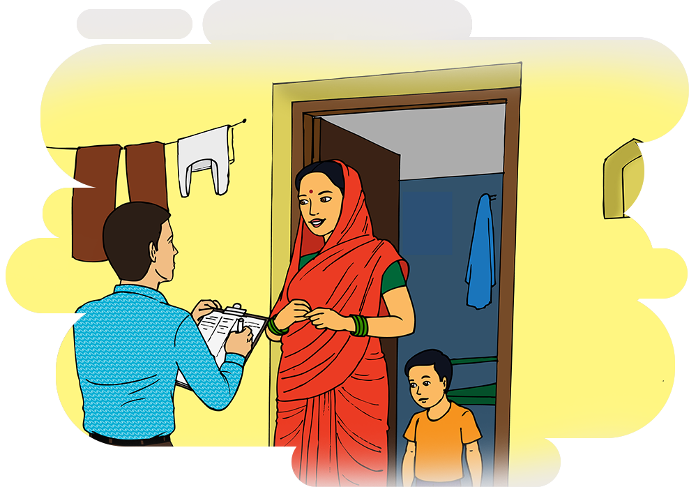
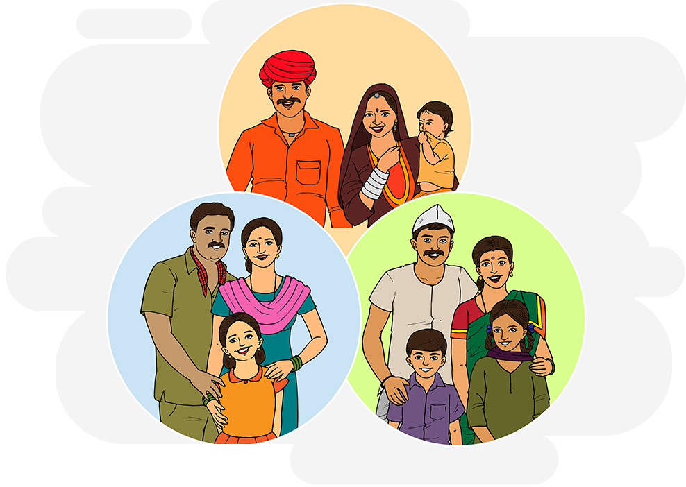
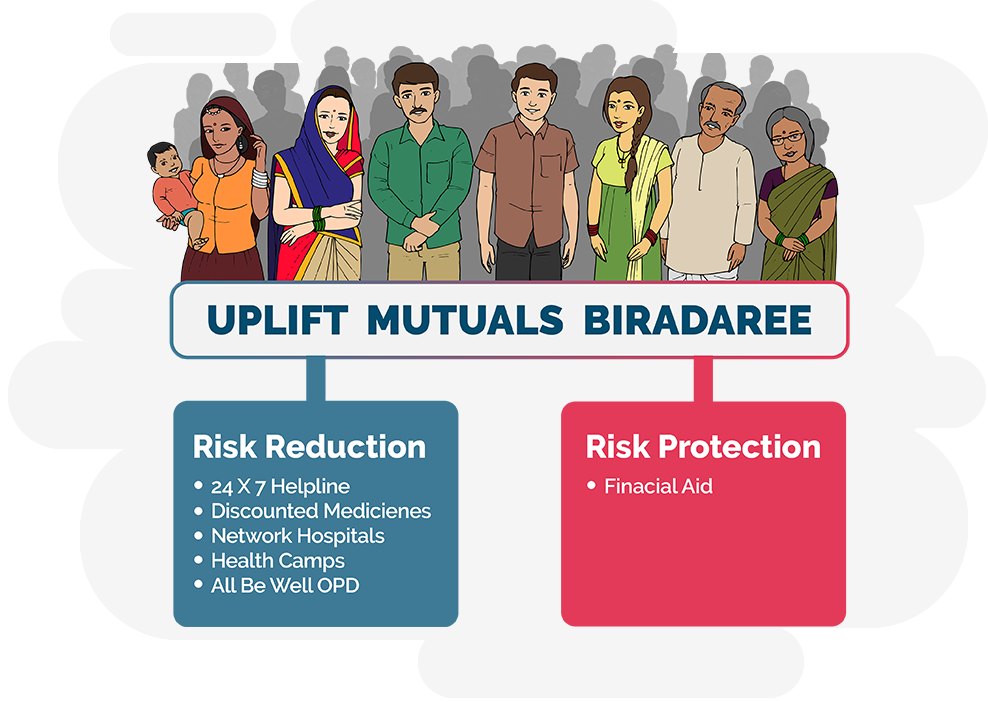

It all began in 2002 in Pune, when we were a small group of development practitioners and
volunteers
from France, working together on livelihood financing of low income families in the urban
slums
of Pune, were searching for appropriate health insurance solutions against the backdrop of an
unfortunate
death of a woman member post hospitalisation. We got a representative from an insurance
company
to talk to our women members. Uplift’s origin’s lie in the insightful conversation that
happened
then when a woman member asked this commercial insurance company representative as to what
will
happen to the money she paid to them, if she did not fall ill. When the representative said
that
in such an event, the money would stay with the company, she replied “it means then, that we
would
benefit only when we are sick, and will have no interest in being healthy because when we are
healthy,
you are the one to benefit”.
2004

Awestruck by the common sense displayed by the member we decided we needed more information
about
what people want in health than just bringing ready-made solutions. A team of actuary
volunteers
from France were then invited to study health financing needs of about 900 families in the
slums
of Pune. The findings again made it clear that current insurance solutions would be of little
use
as families wanted to know the right doctor, the right treatment and the right cost. We
realized
that if ever we wanted to setup a meaningful health insurance solution for these families’
access
to quality health care would be an indispensable part of the design.
2004 to 2015

These two critical insights laid the foundation of the Uplift model that today bases itself
in mutualising
the risk (and not transferring it to a third party) and reducing the risk through an ecosystem
of health services approach. From BOT (2004-2015) to BOO (2016 onwards) We started as an
experiment
in setting up mutuals with local communities who were stakeholders on the Board of Uplift.
This
phase saw Uplift working with different communities’ setup about 9 different mutuals across
urban
rural and tribal geographies.
2016 Onwards

After more than a decade (2004-2016) of building the mutual risk reduction programme that has
setup
9 local mutuals across urban, rural and tribal geographies with over 300,000 people covered by
it, Uplift has now embarked on scaling the mutual to about a million new lives by 2022 using
an
intensive risk reduction approach that includes a centralised risk pool.
Uplift’s Biradaree Model
Uplift’s Biradaree Model offers mutual as a platform, for different communities to share their
health risks.
It invites communities, groups of families to join mutual health risk sharing seamlessly without
having
to invest upfront in the setting up and the management of mutual health microinsurance
It seeks to spread risks across communities across geographies making it a robust risk sharing
model
The Uplift model today consists of two legal entities Uplift India Association a Sec 8 Not for
Profit Company
and Uplift Mutual Development and Aid Society a Public Trust registered under the Bombay Public
Charitable
Trust Act 1860.
Over the years individuals organisations have supported Uplift directly indirectly in its mission
to bring mutual health solutions to low income families in its decade old journey.
These include ATIA, MACIF (France) ,the erstwhile ILO Microinsurance facility, the ILO STEP (New
Delhi)
There have been many volunteer actuaries who have come down all the way to Uplift and helped Uplift
in its pricing and risk management strategies.
Our present support partners include
ICMIF Foundation
The International Cooperative and Mutual Insurance Federation, the largest association of mutual
and cooperative insurers worldwide, under its 5-5-5 Strategy to bring 5 million households in five
countries over five years is supporting Uplift Mutuals in its endeavour.
ICMIF has provided Uplift with a financial support to increase its health mutual aid programme to
cover over half a million lives. This grant will help Uplift expand its ecosystem of Out Patient
Clinics, Health Care Network, 24X7 Helpline and increase its mutual aid outreach to poor families
starting from the slums of Pune and Mumbai.
The Cooperators, a cooperative insurance company from Canada is supporting the ICMIF 5-5-5 support
to Uplift Mutuals.
TIETO, CSR Support on Management Information System for Mutuals
Tieto India, is a subsidiary of TIETO Corporation, Finland ,a leading IT service company in Northern
Europe providing IT and product engineering services.
Uplift's relationship with Tieto goes back to about a decade. This CSR support from Teito has helped
Uplift develop in house web based Management Information system called UTTAM that has been the
corner stone of Uplift's technical strength in offering data rich systems in Mutuals. Currently
Tieto and Uplift are jointly working on developing a state of the art mobile app to bring the entire
experience on mobile.
To know more about TIETO follow this link
http://www.tieto.in/
N/Core Foundation
Uplift Mutual participated in the 2nd Tech cohort of the Nudge Foundation.
ASHOKA Fellowship
Founder and Director of Uplift, Kumar Shailabh was recognized as an ASHOKA fellow for his multi
community, multi geography, centralised health protection model. https://www.ashoka.org/en-US/fellow/shailabh-kumar
The Catalysis
Uplift’s Biradaree Model
Support Ecosystem
It all began in 2002 in Pune, when we were a small group of development practitioners and volunteers from France, working together on livelihood financing of low income families in the urban slums of Pune, were searching for appropriate health insurance solutions against the backdrop of an unfortunate death of a woman member post hospitalisation. We got a representative from an insurance company to talk to our women members. Uplift’s origin’s lie in the insightful conversation that happened then when a woman member asked this commercial insurance company representative as to what will happen to the money she paid to them, if she did not fall ill. When the representative said that in such an event, the money would stay with the company, she replied “it means then, that we would benefit only when we are sick, and will have no interest in being healthy because when we are healthy, you are the one to benefit”.
Awestruck by the common sense displayed by the member we decided we needed more information about what people want in health than just bringing ready-made solutions. A team of actuary volunteers from France were then invited to study health financing needs of about 900 families in the slums of Pune. The findings again made it clear that current insurance solutions would be of little use as families wanted to know the right doctor, the right treatment and the right cost. We realized that if ever we wanted to setup a meaningful health insurance solution for these families’ access to quality health care would be an indispensable part of the design.
These two critical insights laid the foundation of the Uplift model that today bases itself in mutualising the risk (and not transferring it to a third party) and reducing the risk through an ecosystem of health services approach. From BOT (2004-2015) to BOO (2016 onwards) We started as an experiment in setting up mutuals with local communities who were stakeholders on the Board of Uplift. This phase saw Uplift working with different communities’ setup about 9 different mutuals across urban rural and tribal geographies.
After more than a decade (2004-2016) of building the mutual risk reduction programme that has setup 9 local mutuals across urban, rural and tribal geographies with over 300,000 people covered by it, Uplift has now embarked on scaling the mutual to about a million new lives by 2022 using an intensive risk reduction approach that includes a centralised risk pool.
Uplift’s Biradaree Model
Uplift’s Biradaree Model offers mutual as a platform, for different communities to share their health risks.
It invites communities, groups of families to join mutual health risk sharing seamlessly without having to invest upfront in the setting up and the management of mutual health microinsurance
It seeks to spread risks across communities across geographies making it a robust risk sharing model
The Uplift model today consists of two legal entities Uplift India Association a Sec 8 Not for Profit Company and Uplift Mutual Development and Aid Society a Public Trust registered under the Bombay Public Charitable Trust Act 1860.
To understand the Biradaree model watch our educational video in Marathi
https://www.youtube.com/watch?v=D2d0E7ugHxU&t=3s
Support Ecosystem
Over the years individuals organisations have supported Uplift directly indirectly in its mission to bring mutual health solutions to low income families in its decade old journey.
These include ATIA, MACIF (France) ,the erstwhile ILO Microinsurance facility, the ILO STEP (New Delhi)
There have been many volunteer actuaries who have come down all the way to Uplift and helped Uplift in its pricing and risk management strategies.
Our present support partners include
ICMIF FoundationThe International Cooperative and Mutual Insurance Federation, the largest association of mutual and cooperative insurers worldwide, under its 5-5-5 Strategy to bring 5 million households in five countries over five years is supporting Uplift Mutuals in its endeavour.
ICMIF has provided Uplift with a financial support to increase its health mutual aid programme to cover over half a million lives. This grant will help Uplift expand its ecosystem of Out Patient Clinics, Health Care Network, 24X7 Helpline and increase its mutual aid outreach to poor families starting from the slums of Pune and Mumbai.
The Cooperators, a cooperative insurance company from Canada is supporting the ICMIF 5-5-5 support to Uplift Mutuals.
TIETO, CSR Support on Management Information System for Mutuals
Tieto India, is a subsidiary of TIETO Corporation, Finland ,a leading IT service company in Northern Europe providing IT and product engineering services.
Uplift's relationship with Tieto goes back to about a decade. This CSR support from Teito has helped Uplift develop in house web based Management Information system called UTTAM that has been the corner stone of Uplift's technical strength in offering data rich systems in Mutuals. Currently Tieto and Uplift are jointly working on developing a state of the art mobile app to bring the entire experience on mobile.
To know more about TIETO follow this link http://www.tieto.in/
N/Core Foundation
Uplift Mutual participated in the 2nd Tech cohort of the Nudge Foundation.
ASHOKA Fellowship
Founder and Director of Uplift, Kumar Shailabh was recognized as an ASHOKA fellow for his multi community, multi geography, centralised health protection model.
https://www.ashoka.org/en-US/fellow/shailabh-kumar